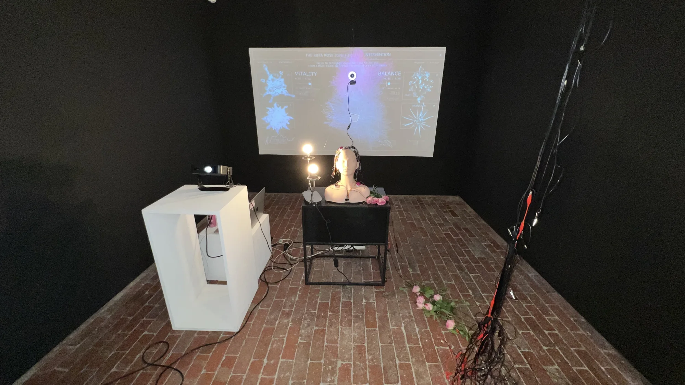

2026 / Interactive audio-visual installation
RE:INTERVENTION
View project →
Acquisition enquiry
Tell me which work interests you and where you would like to present it.
- minniepark.studio@gmail.com
- Subject
- Artwork acquisition enquiry, RE:INTERVENTION
Or copy the address into your email service.
A responsive digital body places care and damage within the same participatory system. Developed from Intervention within The Funeral, the work was presented at LUCKY777 alongside a making video and Record.
- Year
- 2026
- Format
- Interactive audio-visual installation
- Location
- Abbotsford Convent, Melbourne
- Presentation
- LUCKY777 / Platform Presents / 10-11 October 2026
- Materials
- Living roses, a physical-button interface, camera, responsive digital body, sound and moving image.
- Participation
- Physical buttons, body and face tracking, requested captures